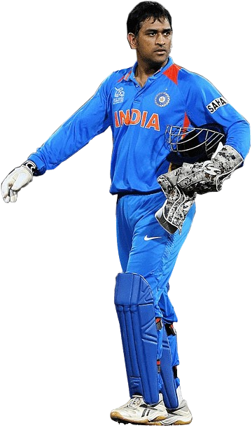

MS Dhoni, also known as "Captain Cool," is one of the greatest cricketers and captains India has ever produced. His leadership, calm demeanor, and exceptional finishing abilities have inspired millions around the world.
MS Dhoni, also known as "Captain Cool," is one of the greatest cricketers and captains India has ever produced. His leadership, calm demeanor, and exceptional finishing abilities have inspired millions around the world.
350
10,000+
10